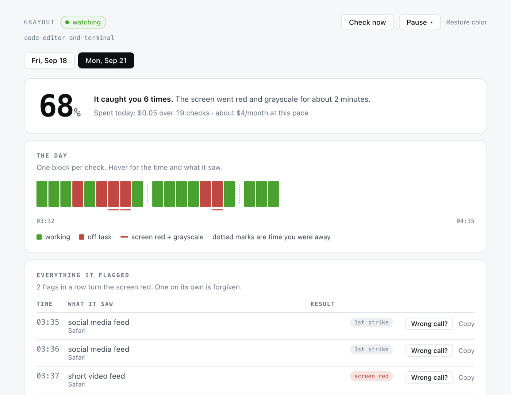

Get distracted.
Lose color.
Grayout watches your screen and drains the color out of your Mac when you are clearly off task.
7 days free, then $9.99 a month. macOS 13 or later, Apple Silicon — Intel build here.
Working.
A mock desktop on a loop. The gray is a real grayscale filter; on your Mac it is the system-wide one, the same switch as Accessibility > Display > Color Filters.
How it works
Three moving parts.
Nothing is blocked, nothing is closed, nothing gets typed for you.
It looks
One screenshot of every display, every 45 seconds. A second monitor is not a hiding place.
It judges
A vision model answers one question about the whole screen: is this person clearly off task?
It grays
Two high-confidence yeses in a row and every display loses its color. Color returns when you do.
Judgement
It reads the screen, not a blocklist.
A lecture on YouTube is work. A feed on YouTube is not. There are no rules to maintain.
Flags
- Social media feeds
- Entertainment video
- Games
- Shopping and sports scores
- Plainly social chat
- A phone in your hand with nothing on screen
Never flags
- Editors, terminals, notebooks
- Documents, spreadsheets, slides
- Email, calendars, docs, papers
- Technical video and lectures
- Calls and screen shares
- An empty desk, or anything ambiguous
Receipts
You can check its work.
Every check is written down: what it saw, whether it fired, and where your month has gone. Get one wrong and Wrong call logs the dispute and backs it off for ten minutes.
What leaves your Mac
Pricing
One price. No API key.
Grayout makes the model calls and pays for them. You never open a provider account, never paste a key, never watch a meter.
Free taste
No card, no account
100 checks, about a working day
- The real thing, not a demo
- Every display watched
- Tied to the Mac you install it on
- Nothing to cancel
Grayout Pro
Every working day
7 days free, cancel any time$6.58 a month, billed yearly
- 15,000 checks a month
- Every display, plus the webcam if you want it
- Grayout pays the model bill
- Cancel from Stripe’s billing portal
Past 15,000 checks the interval stretches instead of cutting you off. Prices in US dollars.
Questions
The short answers.
Do I need an API key?
No. Your subscription covers the model calls. The app holds a Grayout license key and talks only to Grayout.
What happens to my screenshots?
Each check sends a resized screenshot of every display to the Grayout API, which asks the model and sends back one three-field verdict. The service never stores them, never logs them and never writes them to disk.
On your Mac the screenshots are deleted right after each check, and a webcam frame, if you turn the camera on, is never written to disk at all. The privacy page has the full list.
My Mac is stuck gray.
Click Restore color now in the menu bar item; it works in every state. Quitting Grayout also restores color on the way out, and every launch turns grayscale off before anything else runs.
With the app gone entirely: System Settings > Accessibility > Display > Color Filters, and turn it off. That is the exact switch Grayout uses. A watchdog also restores color after 20 minutes no matter what.
What if it gets one wrong?
Click I am working in the menu bar. Color comes back, Grayout backs off for ten minutes, and the dispute is logged. It takes two high-confidence flags in a row before anything happens, and the prompt treats anything ambiguous as work.
Two monitors?
Every display is checked and every display goes gray. If any display shows real work, nothing happens.
Can I cancel?
Any time. Settings > Manage subscription opens Stripe’s billing portal, and cancelling there runs your plan to the end of the period you paid for. Cancel during the seven-day trial and you are not charged. Quitting the app itself is always one click.
Try it for a week.
Seven days free, then $9.99 a month. Or run 100 checks with no card at all.